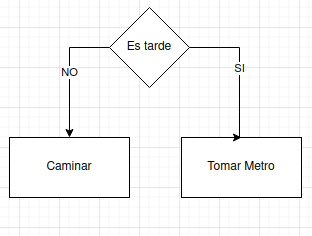
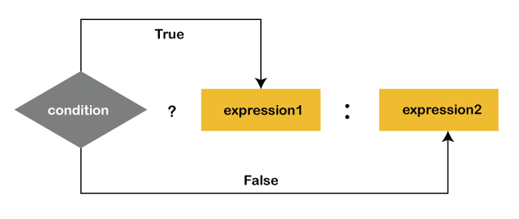
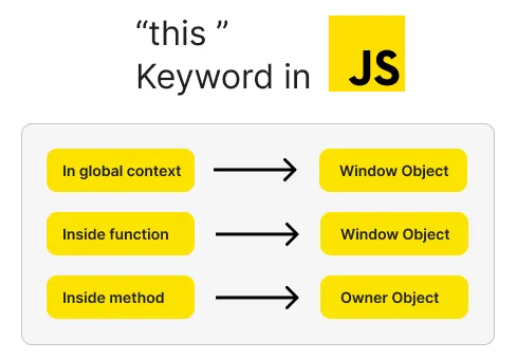

// ejercicio.js
/*crea funcion que toma 4 argumentos, suma los 2 primeros y multiplica los 2 siguientes
Si el número creado es mayor que 50, la consola registra "¡El número es mayor que 50!".
Si es más pequeño, la consola registra "¡El número es menor que 50!"
*/
function myFunctionSumaMultiplica(num1, num2,num3,num4) {
// Verificar que se hayan pasado exactamente 4 argumentos
if (arguments.length !== 4) {
console.log("Error de cantidad: se deben pasar 4 argumentos.");
return;
}
// Verificar que todos sean números
if (
typeof num1 !== 'number' ||
typeof num2 !== 'number' ||
typeof num3 !== 'number' ||
typeof num4 !== 'number'
) {
console.log("Error de tipo: todos los 4 argumentos deben ser números.");
return;
}
let suma1 = num1 + num2;
let suma2 = num3 + num4;
let producto = suma1 * suma2;
if (producto > 50) {
console.log(`¡El número ${producto} es mayor que 50!`);
}
else if (producto === 50) {
console.log(`¡El número ${producto} es igual a 50!`);
}
else {
console.log(`¡El número ${producto} es menor que 50!`);
}
}
//llama a la funcion y muestra el resultado en consola
//var resultado = myFunctionSumaMultiplica(2.5, 3, 4, 2);
// ejemplo con error de tipo
//var resultado2 = myFunctionSumaMultiplica(2.5, 3, "4", 2);
// ejemplo con error de cantidad de argumentos
//var resultado3 = myFunctionSumaMultiplica(2.5, 3, 4);JS - CKP8
Cuestionario - Javascript

¿Qué tipo de bucles hay en JS?
Los bucles son una manera de repetir un proceso. Los bucles más comunes son:
- For: itera sobre una secuencia de elementos, como un array o un objeto.
- While: repite proceso mientras se cumple una condición.Si no se cumple, no se corre el proceso ninguna vez.
- Do-While: similar al bucle While, pero se ejecuta al menos una vez antes de evaluar la condición.
Referencias
https://developer.mozilla.org/en-US/docs/Web/JavaScript/Guide/Loops_and_iteration
¿Cuáles son las diferencias entre const, let y var?
En JavaScript, const, let y var se utilizan para declarar variables, pero tienen diferencias clave en su alcance y comportamiento (hoisting, reglas de reasignación):
Hoisting: Es un comportamiento donde las declaraciones de variables se mueven a la parte superior del ambito en el que se declaran.
var: La variable declarada con var tiene un alcance de función o global, es decir, se aplica a toda la función en la que se declara. Puede ser redeclarada y reasignada.
var persona = { nombre: "Ana", edad: 28 };
var persona = { nombre: "Fran", edad: 25 };Ejemplo de Hoisting para var donde se tiene:
console.log(x); // undefined
var x = 10;Debido al hoisting, el código se ejecuta como si fuera la variable declarada y no asignada hasta después:
var x;
console.log(x); // undefined
x = 10;let: La variable declarada con let tiene un alcance de bloque, es decir, se aplica solo dentro del bloque en el que se declara. Puede ser reasignada, pero no redeclarada.
En el siguiente ejemplo se observa como si se llama a una variable declarada dentro de función y se intenta llamar fuera del bloque nos da error:
if (true) {
let nombre = "Juan";
console.log(nombre);
}
console.log(nombre); // Error: nombre is not definedEn otro ejemplo se usa let para declarar una variable global y luego otra local (dentro de función):
let edad = 25;
if (true) {
let edad = 30;
console.log(edad); // 30
}
console.log(edad); // 25Se observa como la variable local solo es accesible dentro del bloque if y no afecta a la variable global.
Hoisting para let funciona diferente que para var, ya que que con let no se inicializa la variable y causa un error:
console.log(number)
// ReferenceError: Cannot access 'number' before initialization
let number = 50const: La variable declarada con const también tiene un alcance de bloque, pero no puede ser reasignada ni redeclarada. Su valor es constante.
const edad = 30;
edad = 35; // Error: Assignment to constant variable.Hoisting para const es similar que para let donde no se inicializa variable y da error:
console.log(number)
// ReferenceError: Cannot access 'number' before initialization
const number = 50Debido a que usar variables antes de declararlas puede causar problemas, algunas veces se recomienda seguir la regla no-use-before-define o lo que es definir primero y hasta después usar.
Referencias
https://www.geeksforgeeks.org/difference-between-var-let-and-const-keywords-in-javascript/
https://www.freecodecamp.org/news/differences-between-var-let-const-javascript/
¿Qué es una función de flecha?
Una función flecha es una forma concisa de definir una función en JavaScript. Se utiliza la sintaxis () => {} para crear una función anónima.
Ejemplo de una función flecha que suma dos números:
const sumar = (a, b) => a + b;
console.log(sumar(2, 3)); // 5Función normal y anónima equivalentes
La función flecha anterior es equivalente a la siguiente función normal:
function sumar(a, b) {
return a + b;
}Y también es equivalente a la siguiente función anónima:
var sumar = function(a, b) {
return a + b;
}Cuándo usar funciones flecha
Se recomienda usar funciones flecha en los siguientes casos:
- Funciones cortas y simples: Cuando la función es muy simple y no requiere una gran cantidad de código, las funciones flecha son ideales.
- Callbacks: Las funciones flecha son útiles como callbacks, ya que son más concisas y fáciles de leer.
- Funciones anónimas: Las funciones flecha son una forma natural de crear funciones anónimas.
- Map, filter, reduce: Las funciones flecha son ideales para usar con métodos de arrays como map, filter y reduce.
Ejemplo de uso con map:
const numbers = [1, 2, 3, 4, 5];
const doubles = numbers.map((num) => num * 2);
console.log(doubles); // [2, 4, 6, 8, 10]Referencias
https://developer.mozilla.org/en-US/docs/Web/JavaScript/Reference/Functions/Arrow_functions
¿Qué es la deconstrucción de variables?
En JS, una operación condicional, como el nombre indica, permite tener diferentes caminos a tomar (bloques de código a ejecutar) en dependencia de si una condición o condiciones se cumplen.
Esto se puede entender con un ejemplo cotidiano. Digamos que vamos caminando al trabajo de manera regular pero si es tarde tenemos que tomar el metro.

Como vemos, el concepto de condicional es fácil de entender y lo usamos en nuestra vida cotidiana.
Ahora en JS, la sintaxis seria:
let tiempoParaTrabajar = 35;
let limiteCaminar = 30;
let limiteMetro = 15;
if (tiempoParaTrabajar > limiteCaminar) {
console.log(`Vamos caminando!`);
} else {
console.log(`Vamos en Metro que es tarde!`);
}Ahora complicamos un poco más la lógica para mostrar el caso de una condicional dentro de una condicional. Por ejemplo, si fuera tarde tomamos el metro pero si es muy tarde vamos a tomar un taxi.

let tiempoParaTrabajar = 35;
let limiteCaminar = 30;
let limiteMetro = 15;
if (tiempoParaTrabajar > limiteCaminar) {
console.log(`Vamos caminando!`);
} else {
if (tiempoParaTrabajar > limiteMetro){
console.log(`Vamos en Metro que es tarde!`);
} else {
console.log(`Vamos en Taxi que es muy tarde!`);
}
}En caso de que hubieran multiplies condiciones a probar usamos sintaxis: “if…else if…else”.
if (condition1)
statement1
else if (condition2)
statement2
else if (condition3)
statement3
// …
else
statementNVeamos un ejemplo donde dependencia de la edad pagamos un precio diferente en el cine
let edad = 15;
let precioBase = 10;
let precioFinal;
// Aplicar descuento por edad
if (edad < 12) {
precioFinal = precioBase * 0.5;
} else if (edad >= 12 && edad < 18) {
precioFinal = precioBase * 0.75;
} else if (edad >= 65) {
precioFinal = precioBase * 0.7;
} else {
precioFinal = precioBase;
}
//console.log("El precio de la entrada es: $" + precioFinal);Referencias
https://developer.mozilla.org/en-US/docs/Web/JavaScript/Reference/Statements/if...else
¿Qué hace el operador de extensión en JS?

El operador condicional (ternario) es el único operador de JavaScript que toma tres operandos: una condición seguida de un signo de interrogación (?), luego una expresión que se ejecuta si la condición es verdadera y, a continuación, dos puntos (:) seguidos de la expresión que se ejecuta si la condición es falsa. Este operador se utiliza frecuentemente como una alternativa a la sentencia if…else.
condicion ? ExpresionEjecutaSiVerdadero : ExpresionEjecutaSiFalsoPor ejemplo, imaginamos que hemos decidido comprar lecha cuando hay menos de 5 litros en casa (nos encanta hacer yogurt :D).
Primero veamos como seria usando condicional tipo if … else :
if (lecheLitros >= 5) {
console.log(`No comprar leche!`);
} else {
console.log(`Comprar leche!`);
}Ahora veamos un seudo código de operación ternaria:
HayMenosQueUmbral ? ComprarLeche : NoComprarLecheEn código seria algo como:
const umbral = 5;
let lecheLitros = 26;
const comprarLeche = lecheLitros >= umbral ? "No comprar leche" : "Comprar Leche";
console.log(comprarLeche); // "No comprar leche"Como vemos, la operación ternaria nos ofrece una manera de simplificar el código y la lectura en ciertos casos donde las condiciones son simples.
Referencias
https://developer.mozilla.org/en-US/docs/Web/JavaScript/Reference/Operators/Conditional_operator
https://www.w3schools.com/java/java_conditions_shorthand.asp
¿Cuál es la diferencia entre una declaración de función y una expresión de función?
En JS, se pueden definir funciones de usando declaración de función y expresión de función. Vamos a ver ejemplos y diferencias.
Declaración de función
La función se define usando la palabra clave function. Se le asigna un nombre y se pueden llamar y reusar en varios sitios.
Por ejemplo, creamos una función que suma dos números de la siguiente manera:
function sumarNumeros(num1,num2){
return num1 + num2;
}Hoisting. Las declaraciones de funciones se elevan al inicio del contexto lo que permite llamar a la función antes de escribir la declaración en el código.
sumarNumeros(1,3);// 4
function sumarNumeros(num1,num2){
return num1 + num2;
}Expresión de función
En este caso, a una variable se le asigna la función que puede ser anónima o tener un nombre interno. Por ejemplo, en la siguiente expresión creamos la variable getRectArea que contiene una función anónima:
const getRectArea = function(width, height) {
return width * height;
};
console.log(getRectArea(3, 4));
// Expected output: 12Un ejemplo de función con nombre podria ser:
let funcionConNombre = function miFuncion() {
console.log("Esta es una function expression con nombre.");
};
funcionConNombre(); //
// Expected output: Esta es una function expression con nombreNo hosting. Lo que quiere decir que no se eleva y se tiene usar después de la asignación.
Un uso común de expresiones de función es cuando se requiere una función como valor como cuando se usan callbacks.
Callbacks son funciones que se pasan como argumento a otra función y se ejecuta después de que ocurra un evento o se completa un proceso. Este tipo de mecánismos se usa en operaciones asíncronas como manejar eventos o esperar a una respuesta de API, ya que permite que el código continua su ejecución sin bloquearse. Por ejemplo, en en sieguiente código se espera a que ocurra un evento (click) y cuando esto ocurre, se imprime en consola un mensaje:
button.addEventListener("click", function (event) {
console.log("button is clicked!");
});Es importante observar que la secuencia de ejecución con callbacks no es la secuencia en la que estan definidas pero más bien en la secuencia en la que son llamadas.Esto permite ir llamando a funciones de manera muy dinámicas y en respuesta a las acciones de lo que podría ser las necesidades de un usuario en una web app.
Referencias
https://www.w3schools.com/js/js_function_definition.asp
https://developer.mozilla.org/en-US/docs/Web/JavaScript/Reference/Operators/function
¿Qué es la programación orientada a objetos?

This es una palabra clave utilizada dentro de funciones y clases. Hace referencia al objeto en cuestión. En el caso de que estamos creando una función, la palabra “this” se usa para representar o llamar al objeto que dicha función esta modificando. El objeto al que se refiere varia en dependencia de cómo y donde se llama a this.
Vamos a ver algunos ejemplos para entender mejor como usar this:
- Al llamar fuera de función, se refire al objeto de ventana global.
console.log('this alone', this); // [object Window]- Al llamar dentro de un objeto, nos referimos al objeto.
const person = {
firstName: "John",
lastName : "Doe",
id : 5566,
getThis : function() {
return this;
}
};
console.log('this in object method', person.getThis());Y de la misma manera, podemos usar this para llamar a otras propiedades del objeto
const person = {
firstName: "John",
lastName : "Doe",
id : 5566,
getFullName : function() {
return this.name + ' ' + this.lastName;
}
};
console.log('this in object method', person.getFullName());Hay otras posibles referencias de “this” que se resumen aqui:
- En un método de un objeto, this se refiere al objeto.
- Por sí solo, this se refiere al objeto global.
- En una función, this se refiere al objeto global.
- En una función en modo estricto, this es undefined.
- En un evento, this se refiere al elemento que recibió el evento.
- Métodos como call(), apply() y bind() pueden asignar this a cualquier objeto.
Referencias
https://www.freecodecamp.org/espanol/news/como-usar-la-palabra-clave-this-en-javascript/
https://keepcoding.io/blog/que-es-this-en-javascript/
https://www.w3schools.com/js/js_this.asp
https://medium.com/@leoanimesh/javascript-this-keyword-explained-a62f3676fca1
¿Qué es una promesa en JS?
¿Qué hacen async y await por nosotros?
Ejercicios
Ejercicio 1
Crea un bucle for en JS que imprima cada nombre en esta lista.
miLista = “velma”, “exploradora”, “jane”, “john”, “harry”Crea un bucle while que recorra la misma lista y también imprima los nombres. Nota: Recuerda crear un contador para que el ciclo no sea infinito.
Ejercicio 2
Cree una función de flecha que devuelva “Hola mundo”.